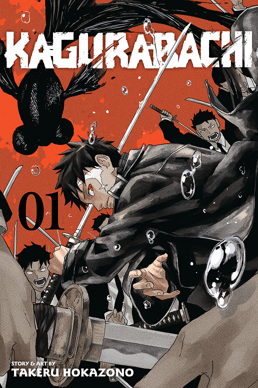
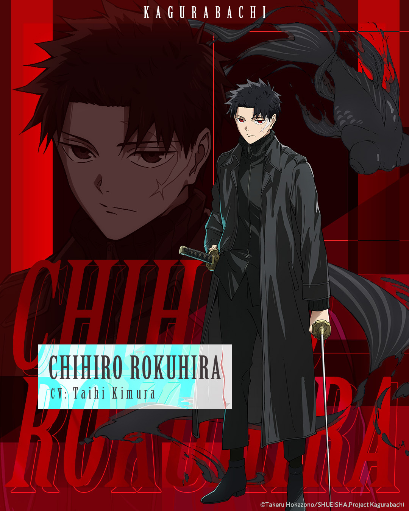
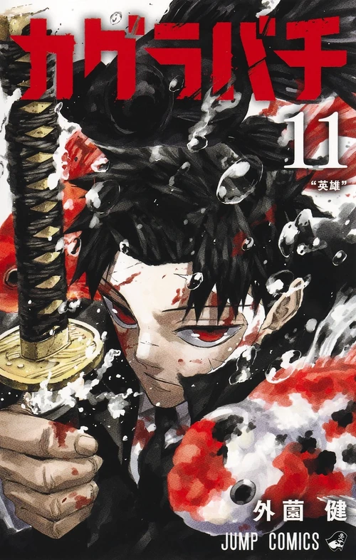

What it is
Kagurabachi is Takeru Hokazono’s first long work. It opened in Weekly Shōnen Jump issue 2023 #42, on 19 September 2023, after the Tezuka-winning one-shot Enten (Jump Giga Spring 2021) and a run of Giga and Jump shorts: Farewell! Cherry Boy!, Chain, Madogiwa de Amu, Roku no Meiyaku. VIZ and MANGA Plus carry the English simulpub the same week as the Japanese magazine. Jump Comics tankōbon started 2 February 2024. VIZ’s English volumes started 5 November 2024.
The title is the book’s joke and its method. Kagura is shrine dance. Bachi is the strike, a drumstick, a punishment, a sound. Hokazono draws a modern Japan that had to admit sorcery in public, then lie about what it did with it. The fighting language is a household object first: a bowl of goldfish, a katana in a cellar, a coat already stained black.
It is a revenge serial that keeps having to become something else. Six Enchanted Blades won a war. The seventh was made to finish them. The house was raided. The son went into Tokyo with the counter, not the trophy. That is the premise. The story page is what happens when that file hits the city.




The man on the masthead
Hokazono was born 6 September 2000 in Osaka. He has said he wanted a Jump serial the way other kids want a sport. Naruto is why he tried. The Tezuka Enten is not Kagurabachi’s seventh blade, different kanji, different story, but it is the same hunger for a named sword in a magazine that still sells named swords. Roku no Meiyaku already knew how to end a one-shot on a debt. Two years later the weekly would end Part 1 on “Swordsmith.”
At Anime NYC 2025 he talked goldfish, John Wick streets, and Ōtomo books in the office. The Asahi interview adds Tarantino / Fincher / Nolan as the directors he grew up excited by, and the goldfish-not-koi story that English videos still get wrong. He talked to a real swordsmith so the workshop pages would not be cosplay. Full file: Hokazono Takeru. The fins: Goldfish, not koi.
How it landed
Promo art: black coat, white type, a fish that was not a Dragon Ball aura. English Twitter invented a career for it, “the new Big Three”, before page one existed. Chapter 1 was the most-viewed new title on MANGA Plus in its first week. By April 2024 the app had logged over 99 million page views and beat Spy × Family, Dragon Ball Super, and Boruto on the global ranking. Circulation passed 4 million by April 2026. Next Manga Award, print, 2024. Nominations later for Shogakukan, Kodansha, and an Eisner international slot. An anime from Cypic, directed by Tetsuya Takeuchi, is scheduled for April 2027.
Ironic hype got the first chapter opened. The Vs. Sojo fight, Hakuri, and Samura are why people stayed. If you are sending the book to someone who only knows the hashtag, send chapter 1 on MANGA Plus and the first-read notes. The longer reception file is Meme to flagship.
What this site is
Wiki-depth character and blade pages. A Kanzenshuu-style manga guide. Cover studies. Long essays. Nothing but Kagurabachi. Official chapters stay on VIZ and MANGA Plus. Late beats sit behind black bars you can click.
The homepage is five tiny rows and four leftover tiles. These guide pages are the introductions that used to live there. The rest of the site is the encyclopedia: characters, blades, volumes and chapters, arcs, world, essays.
Where the numbers sit now
Eleven Japanese volumes as of 1 May 2026. Volume 12, 4 September 2026. Chapter 129, Ironworks, 23 August 2026. Over 4 million copies in circulation by April 2026. Next Manga Award, print, 2024. Daruma for Best Action Manga, 2026. Cypic, Takeuchi, Sasaki, April 2027. The page that holds those facts without wrecking this guide’s lede is the publication record. The uncollected war book is the Part 2 page. Names: who is who.